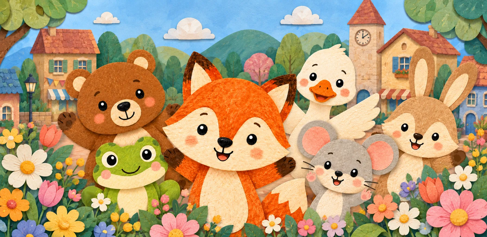
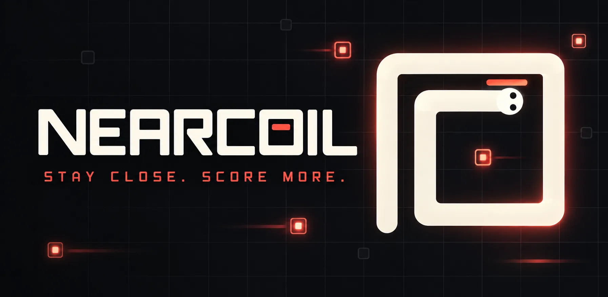

Apps and games
I'm Nikita Petrov, an independent developer. I build apps for working with location data and video, as well as mobile games. These are my current projects.
Projects
Apps & games for mobile and desktop
Free on Android · iOS in development Android · iOS planned · Location data utility
Convert a Google Maps Timeline export to GPX, KML, GeoJSON, or CSV. Filter by date and preview the track on a map. Conversion runs entirely on your phone. A paid iOS version is in development.

Android · iOS planned · Matching game
A matching game for children aged about one to five. Find two identical animals, collect them in an album, and progress at your own pace. No ads, accounts, or tracking. An iOS release is planned.

Android & iOS · Snake arcade
A take on Snake where moving close to your own body increases your score. Includes a 70-level campaign, ranked runs, daily challenges, and replays. A simultaneous Android and iOS release is planned.
Windows & iPad · Video creation
Cinelace uses open AI models to automatically create a video from your footage. Refine the result on the editor timeline whenever you like. In development.
About
I design and develop these projects under the name Nikita Petrov Apps. They range from utilities for location data and video creation to games for mobile devices.
For Same Same!, I work with illustrator Katia Oskina, who handles visual development and art refinement.